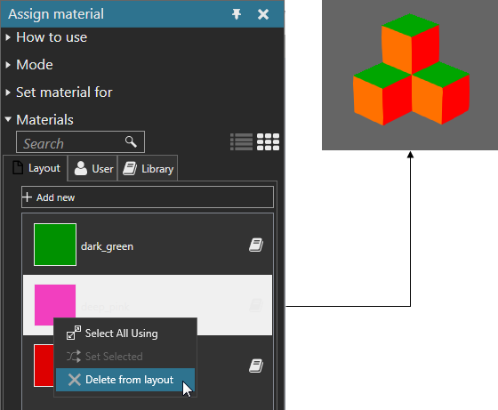

Deleting Materials from Layout
You can delete a material from objects in the 3D world. This is similar to clearing, but you are removing the material of multiple objects.
- On the Modeling tab, in the Geometry group, click the Tools arrow, and then under Material, click Assign.
- In the Assign material task pane, expand Materials, and then find a material.
- Right-click the material, and then click Delete from layout. This clears the material of all objects using that material. If the material is not stored in a user or system library, the material would be removed and no longer available in the layout.
Example. Delete pink material from objects in 3D world
